Abstract
Key Contributions
- Few-shot stress test for VLA adaptation. We provide a systematic evaluation of state-of-the-art VLA models under few-shot imitation learning, revealing substantial degradation when adapting from only 10-30 demonstrations.
- Future-oriented conditioning for data-efficient adaptation. We introduce FOCA, which augments VLA adaptation with explicit and implicit future-conditioning objectives in latent space, focusing on task-grounded interaction tokens rather than dense pixel prediction.
- Strong empirical results across simulation and real robots. We run experiments across a diverse set of 9 simulated benchmarks, a simulated humanoid and 3 real-robot setups with an Aloha robot arm, observing consistent improvements in few-shot adaptation over strong VLA baselines.
Method Overview
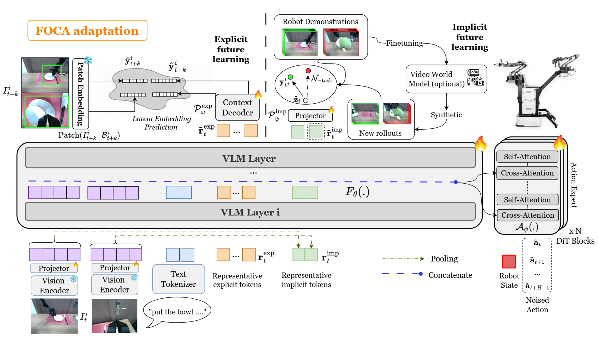
FOCA Architecture: Our method combines explicit prediction of future latent embeddings in task-grounded dynamic regions with implicit alignment of vision-language representations to future goal frames. This dual approach enables long-horizon reasoning while maintaining data efficiency.
Future-Oriented Conditioning
FOCA operates entirely in latent embedding space, avoiding the computational cost of pixel-level future frame prediction. Instead of modeling the full scene, FOCA focuses on task-grounded dynamic regions corresponding to robot-object interactions inferred from the current observation and instruction.
Explicit Future Prediction
We introduce a small set of representative tokens that aggregate joint vision-language embeddings and feed them into a lightweight decoder that predicts latent embeddings for future interaction regions. This design conditions the policy on anticipated outcomes while remaining invariant to static or task-irrelevant content.
Implicit Future Alignment
Beyond explicit prediction, FOCA introduces an implicit future-conditioning objective that aligns task-grounded interaction tokens with vision embeddings of future goal frames. This formulation can be interpreted as estimating goal-conditioned discounted occupancies, connecting FOCA to Q-learning and value-based reinforcement learning.
Action-Free Supervision
The implicit objective naturally supports action-free auxiliary supervision from synthetic videos generated by video world models (e.g., DreamGen). Unlike approaches requiring pseudo-actions or inverse dynamics, FOCA can directly leverage such action-free videos, enabling rapid policy updates for new scenarios.
Results
95.7% Success Rate on LIBERO with 20 Demonstrations
Outperforming Pi-Zero trained with 100 demonstrations (94.6%)
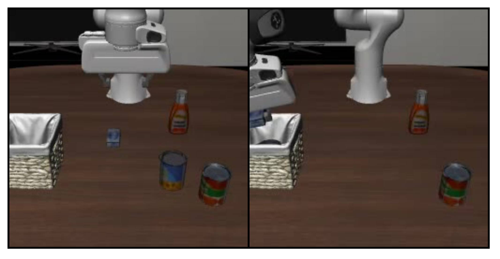
LIBERO Benchmark
FOCA achieves state-of-the-art performance on the LIBERO benchmark with significantly fewer demonstrations than baseline methods.
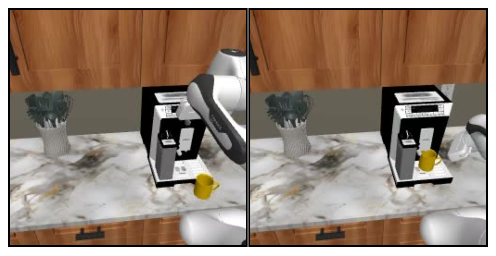
RoboCasa Tasks
Consistent 7-12% improvement in success rates across diverse household manipulation tasks on both π₀ and GR00T N1.5 architectures.
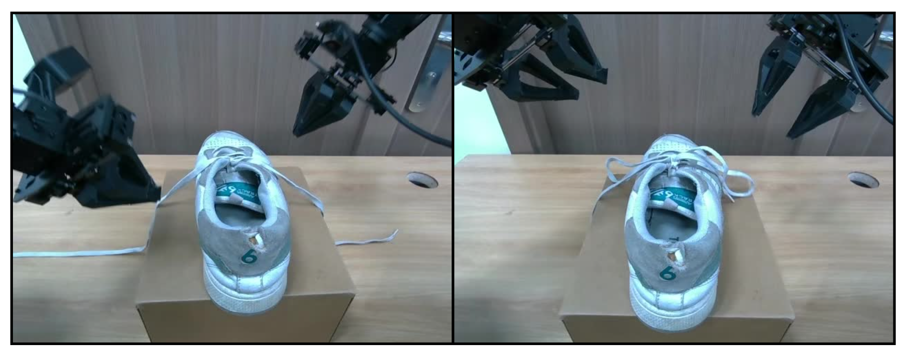
Real Robot Validation
Demonstrated effectiveness on 3 real-robot setups with Aloha bimanual robot arm, showing strong sim-to-real transfer.
Performance Analysis
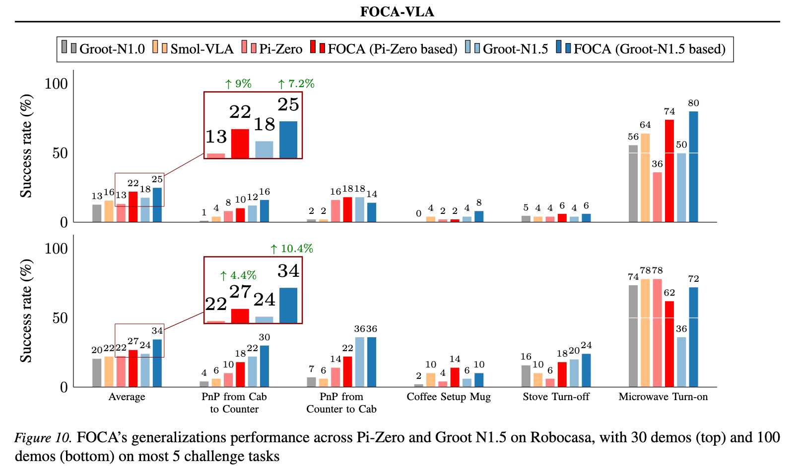
Figure 1: FOCA's generalization performance across Pi-Zero and Groot N1.5 on RoboCasa, with 30 demos (top) and 100 demos (bottom) on the 5 most challenging tasks. FOCA consistently improves success rates by 4.4-10.4% across different VLA architectures.
Table 1: Ablation Study on Implicit Future Prediction (10% Data on LIBERO)
Comparison of different design choices for implicit future prediction, including single vs. multi-frame alignment, object-centric vs. full image embeddings, and alternative contrastive strategies.
| Method | Avg | Libero-10 | Goal | Object | Spatial |
|---|---|---|---|---|---|
| FOCA implicit only - single frame | 83.6 | 65.6 | 91.0 | 90.0 | 87.6 |
| FOCA implicit only - multi-frames | 83.3 | 64.8 | 92.0 | 89.5 | 86.9 |
| FOCA implicit with full images | 81.7 | 62.4 | 90.8 | 87.6 | 85.8 |
| Contrast - image-text vs. robot state | 78.2 | 59.4 | 86.2 | 85.4 | 81.6 |
| Contrast - multi-frames vs. text | 78.3 | 59.0 | 87.0 | 83.2 | 84.0 |
Table 2: Ablation Study on Explicit Future Prediction
Performance comparison of explicit future prediction variants on 40% and 10% LIBERO data, showing the importance of latent object-centric prediction and optimal token count.
| Data | Method | Avg | Libero-10 | Goal | Object | Spatial |
|---|---|---|---|---|---|---|
| 40% | FOCA explicit only | 93.3 | 86.8 | 93.4 | 98.6 | 94.2 |
| FOCA explicit (full images) | 90.9 | 84.0 | 92.6 | 97.2 | 90.0 | |
| FOCA explicit (object-centric) | 91.4 | 84.4 | 93.6 | 96.2 | 91.4 | |
| 10% | FOCA explicit, 8 tokens | 79.2 | 60.0 | 89.4 | 83.2 | 84.2 |
| FOCA explicit, 18 tokens | 76.4 | 59.6 | 84.2 | 78.8 | 82.8 | |
| FOCA explicit, 2 tokens | 76.6 | 58.6 | 88.0 | 78.6 | 81.2 |
Table 3: Token Initialization Strategy Comparison (40% Data)
Dynamic (adaptive) initialization consistently improves performance over static (random) initialization for both implicit and explicit tokens.
| Method | Libero-10 | Goal | Object | Spatial | Avg |
|---|---|---|---|---|---|
| π₀ Baseline | 82.0 | 92.6 | 95.2 | 89.6 | 89.85 |
| FOCA (both random) | 84.2 | 92.6 | 97.8 | 92.2 | 91.7 |
| FOCA (adaptive implicit, random explicit) | 88.0 | 94.6 | 99.6 | 93.6 | 93.95 |
| FOCA (both adaptive) | 87.8 | 96.0 | 98.4 | 95.0 | 94.3 |
Qualitative Results
Open the top drawer and put the bowl inside. / Pick up the alphabet soup and place it in the basket.
Base VLA
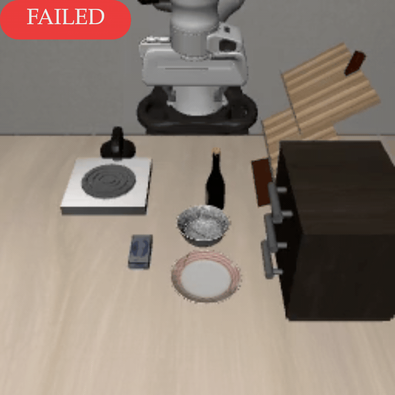
FOCA
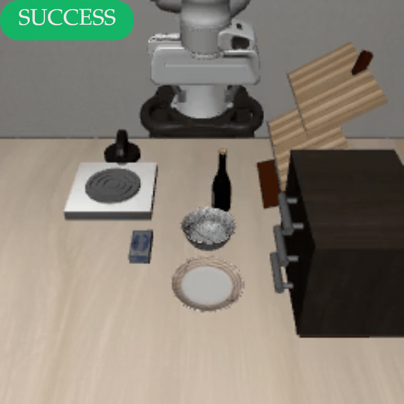
Base VLA
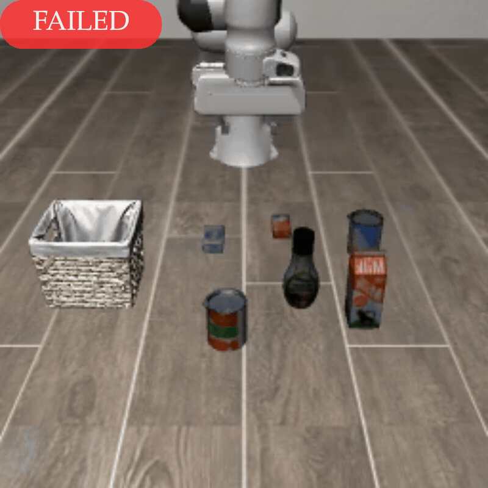
FOCA
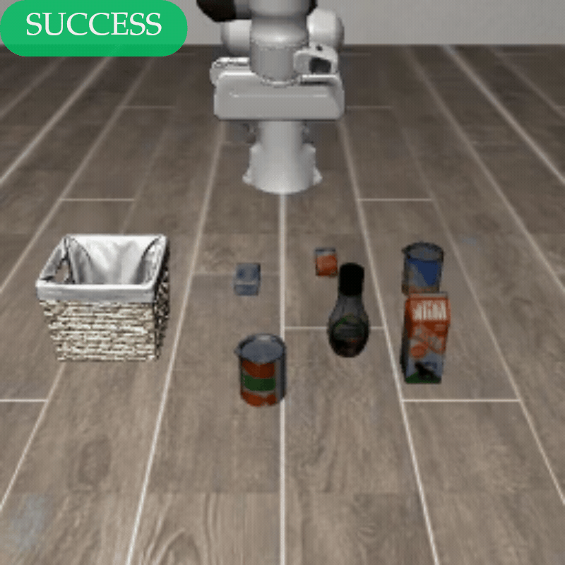
Pick up the black bowl between the plate and the ramekin and place it on the plate. / Put both moka pots on the stove.
Base VLA
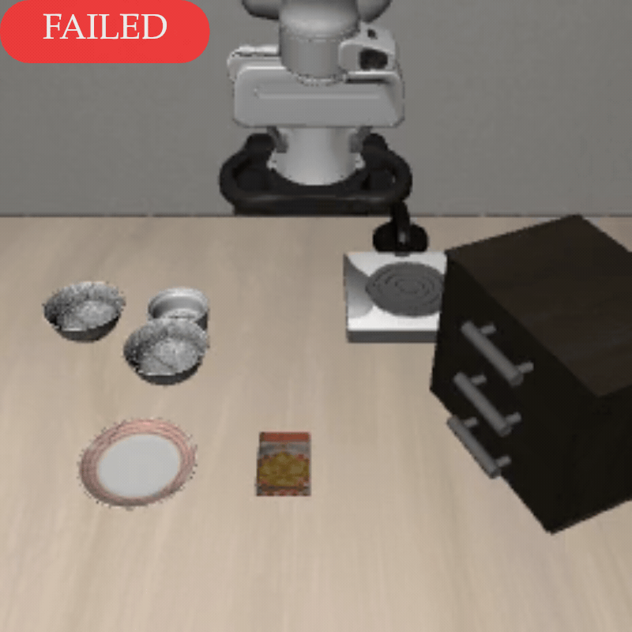
FOCA
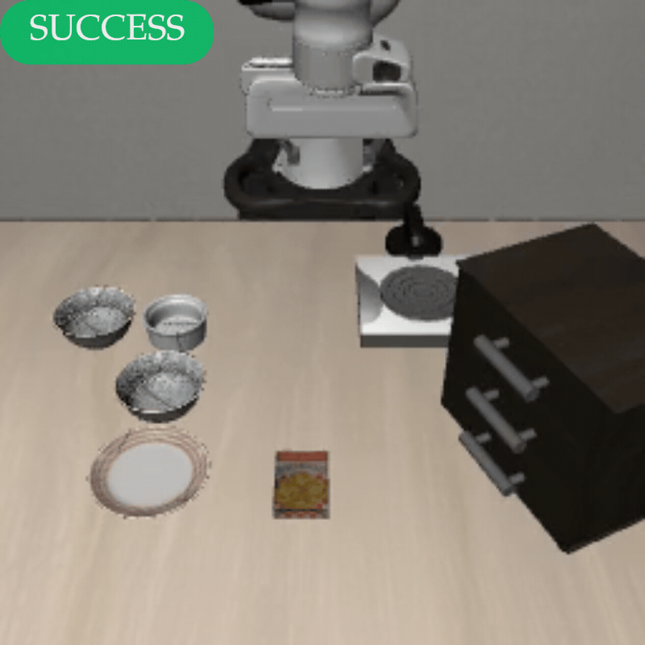
Base VLA

FOCA

Put the white mug on the left plate and put the yellow and white mug on the right plate. / Put the yellow and white mug in the microwave and close it.
Base VLA

FOCA
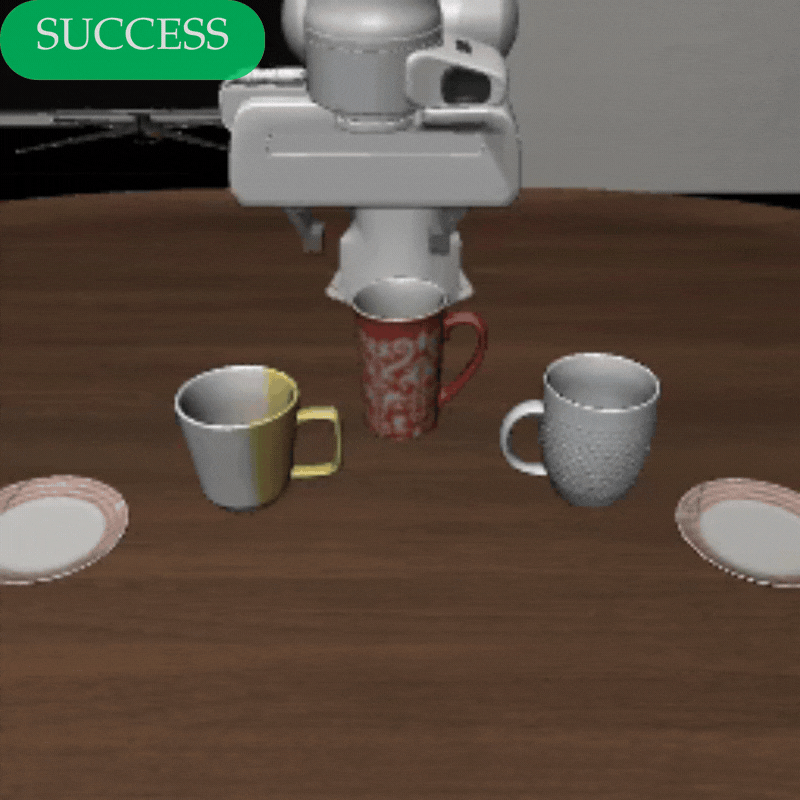
Base VLA

FOCA

Pick up the book and place it in the back compartment of the caddy.
Base VLA

FOCA
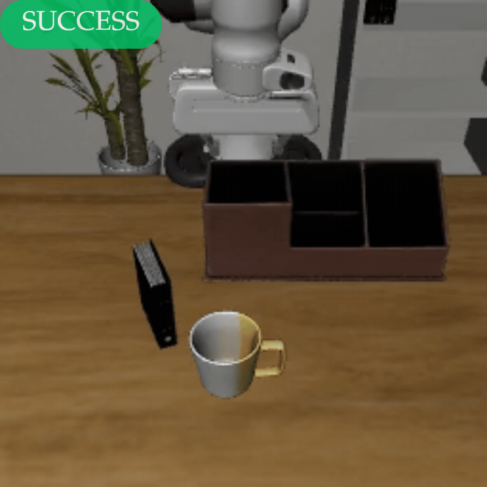
Video Presentation
Acknowledgment
Duy M. H. Nguyen and M. Niepert acknowledge funding by Deutsche Forschungsgemeinschaft (DFG, German Research Foundation) under Germany's Excellence Strategy - EXC 2075 – 390740016 and the International Max Planck Research School for Intelligent Systems (IMPRS-IS). Tuan Anh Tran, Duy M. H. Nguyen, and Daniel Sonntag are also supported by the No-IDLE project (BMBF, 01IW23002), the MASTER project (EU, 101093079), and the Endowed Chair of Applied Artificial Intelligence, Oldenburg University.
Citation
@inproceedings{foca2026,
title={FOCA: Future-Oriented Conditioning for Data-Efficient Vision-Language-Action Adaptation},
author={Nguyen, Duc Minh and Diep, Nghiem Tuong and Nguyen, Binh Gia and Ho, Trong-Bao and Le, Doanh and Nguyen, Tan Q. and Ha, Thien-Loc and Tran, Nhiem and Thach, Bao and Tran, Nhat X. and Tran, Tuan A. and Habuda, Artur and Møller, Philip Lund and Le, Tran Nguyen and Sonntag, Daniel and Niepert, Mathias and Doan, Khoa D. and Duong, Vu and Ngo, Hung Quoc and Vu, Minh N. and Nguyen, Duy M. H. and Le, An Thai and Vien, Ngo Anh},
booktitle={International Conference on Machine Learning (ICML)},
year={2026}
}